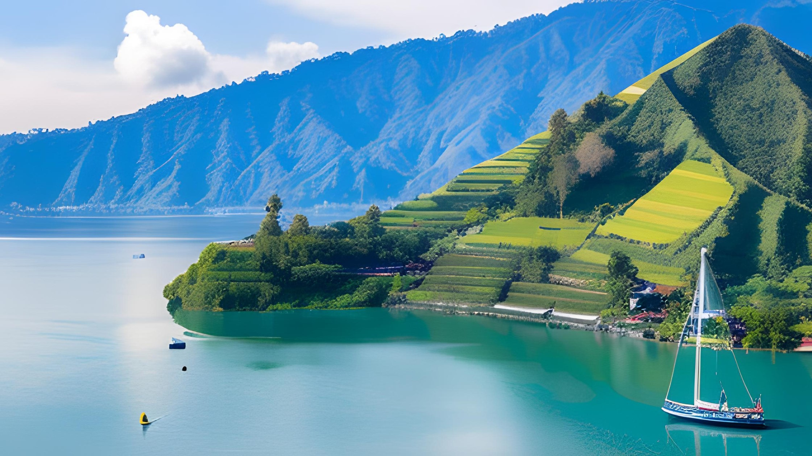

|
Nama Objek |
Lokasi |
Deskripsi |

|
Pulau Bali |
Bali |
Keindahan Alam: Bali dikenal karena keindahan alamnya yang menakjubkan. Pulau ini memiliki pantai-pantai berpasir putih yang eksotis seperti Kuta, Seminyak, dan Jimbaran. Di sebelah utara, Anda akan menemukan wilayah pegunungan yang hijau, seperti Ubud, yang terkenal dengan sawah teraseringnya, sungai-sungai, dan hutan hujan tropisnya. |
| Kebudayaan dan Tradisi: Bali juga kaya akan warisan budaya dan tradisi yang unik. Penduduk Bali dikenal sebagai orang Bali, dan mereka memiliki budaya yang kaya, termasuk tarian, seni patung, musik tradisional, dan upacara keagamaan yang meriah seperti upacara Hindu Bali. |
| Kuil dan Pura: Pulau Bali dipenuhi dengan kuil-kuil indah dan pura (tempat ibadah Hindu). Salah satu kuil paling terkenal adalah Pura Besakih, yang merupakan "ibu" dari semua pura di Bali. Pura Uluwatu dan Pura Tanah Lot juga sangat populer di kalangan wisatawan |

|
Borobudur |
Yogyakarta |
Kebesaran Sejarah: Borobudur adalah sebuah candi Buddha kuno yang dibangun pada abad ke-9 oleh kerajaan Sailendra. Candi ini menggambarkan pencapaian luar biasa dalam seni, arsitektur, dan keagamaan. Relief-reliefnya yang indah menceritakan kisah kehidupan Buddha dan ajaran-ajarannya, memberikan wawasan mendalam tentang sejarah dan budaya Indonesia. |
| Pengalaman Spiritual: Borobudur adalah tempat peribadatan dan meditasi bagi umat Buddha. Anda dapat merasakan ketenangan dan kedamaian di sini saat Anda berkeliling kompleks candi yang menghadap ke arah matahari terbit. Berjalan-jalan di sekitar stupa-stupa dan menikmati keindahan lingkungan alamnya adalah pengalaman spiritual yang unik. |
| Keindahan Alam: Candi Borobudur dikelilingi oleh sawah hijau yang luas dan pegunungan yang menjulang. Ketika matahari terbit atau terbenam, pemandangan ini menjadi sangat memukau. Sangat cocok untuk berfoto atau hanya menikmati keindahan alam yang menenangkan. |
|

|
Danau Toba |
Sumatera Utara |
Lokasi dan Ukuran: Danau Toba terletak di Sumatra Utara, Indonesia, dan merupakan danau vulkanik terbesar di dunia. Danau ini memiliki panjang sekitar 100 kilometer dan lebar sekitar 30 kilometer, menciptakan luas permukaan air sekitar 1.145 kilometer persegi. |
| Asal Usul: Danau Toba terbentuk lebih dari 70.000 tahun yang lalu dalam letusan gunung berapi super Toba yang dahsyat. Letusan ini adalah salah satu yang terbesar dalam sejarah Bumi dan menciptakan kaldera besar yang seiring waktu terisi dengan air hujan dan mata air. |
| Keindahan Alam: Danau Toba dikelilingi oleh pemandangan alam yang memukau. Gunung-gunung tinggi dan pegunungan, seperti Gunung Pusuk Buhit, membentang di sekitar danau. Pulau Samosir, sebuah pulau vulkanik di tengah Danau Toba, adalah salah satu tujuan wisata utama.. |